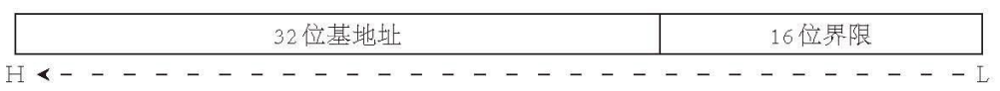
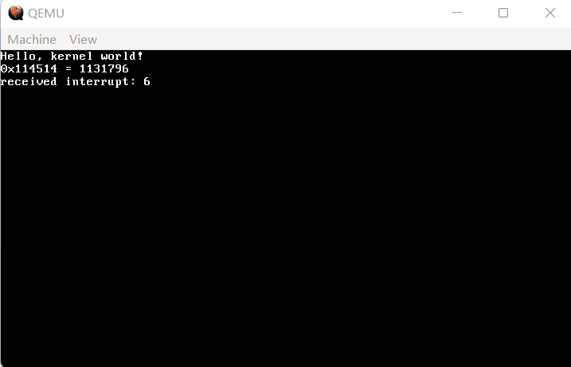

09 重设 GDT、IDT
早在第5节，笔者其实就已经说过 GDT 到底是个什么东西了。但是，当时说得不够明确，语焉不详，因此在这里重新说一遍。
自 8086 时代以来，内存一直是一个PC上必不可少的物件。而在8086的时代，intel的大叔们拍着胸脯说：“内存绝不会超过1MB！”
然而，哪怕在当时，16位的寄存器最多也只能寻址64KB。于是，intel的大叔们想出了一种绝妙的方法，再加一组16位寄存器，叫做段寄存器，也就是 ds、es、fs、gs、ss，这样在寻址时，给段寄存器乘16，再加上原本的地址，就有了 64KB*16+64KB=1088KB 的寻址空间，比1MB刚刚超过一点。剩下的 64KB，intel的大叔们选择让它们指回0~64KB，完美！
进入32位之后，由32位寄存器来寻址，寻址空间可达4GB，再这么维持下去就不够用了。同时，32位模式又称“保护”模式，现有的方法也不足以进行“保护”，这就迫切地需要对段进行改革。
改革的具体方法如下。首先是段寄存器，它们不再是乘以16的这么一个代表，而是一个选择子，结构如下：

（图 9-1 选择子结构）
其中的 TI 和 RPL 正是这种改革引入的新东西，后面还要讲到，在这里不多说。多说几句的是剩下的12位，它代表的是描述符索引。何为描述符？GDT 全称 Global Descriptor Table（全局描述符表），其实就是GDT的表项。
好，段寄存器改革完毕了，但段本身也要进行改革，它不能再只代表一段连续的内存了。事实上，为了尽力压缩空间，intel的大叔们还是花了相当的功夫的，但最后也就形成了一种十分畸形的结构：

（图 9-2 描述符结构）
所谓前人挖坑，后人兼容，屎山大都是这么堆起来的，这种结构一直保存到现在的64位（笑）……不说别的了，我们来考虑些更加现实的问题。
早在 Loader 的阶段，我们已经设置过 GDT，不过它的样子大家恐怕都已经忘完了吧。所以我们需要把 GDT 移到内核来控制。
GDT 还有另外一个作用，那就是 IDT 需要依赖 GDT 提供的代码段选择子进行设置，所以必须先设置 GDT 才能设置 IDT。
那么，我们开始吧。依照上面的结构，新建 gdtidt.h，定义 GDT 描述符如下：
代码 9-1 GDT描述符（include/gdtidt.h）
struct gdt_entry_struct {
uint16_t limit_low; // BYTE 0~1
uint16_t base_low; // BYTE 2~3
uint8_t base_mid; // BYTE 4
uint8_t access_right; // BYTE 5, P|DPL|S|TYPE (1|2|1|4)
uint8_t limit_high; // BYTE 6, G|D/B|0|AVL|limit_high (1|1|1|1|4)
uint8_t base_high; // BYTE 7
} __attribute__((packed));
typedef struct gdt_entry_struct gdt_entry_t;
由于 C 语言编译器的对齐机制，如果什么都不做，会导致 GDT 的表项与硬件不符，因此需要加入 __attribute__((packed)) 禁用对齐功能。下面那个 typedef 仅仅是为了看着方便。
CPU 如何知道 GDT 的更改呢？这需要通过一个汇编指令：lgdt [addr]，它可以从 addr 处读取六个字节作为新的 GDTR 寄存器，从而告知 CPU 新的 GDT 位置。
GDTR 的结构在前图 5-5 中有过标明，这里再放一遍：

（图 9-3 gdtr 结构）
以下是 C 语言定义的 GDTR 结构：
代码 9-2 GDT描述符（include/gdtidt.h）
struct gdt_ptr_struct {
uint16_t limit;
uint32_t base;
} __attribute__((packed));
typedef struct gdt_ptr_struct gdt_ptr_t;
出于同样的理由，我们使用了 __attribute__((packed))。
接下来，新建 gdtidt.c，我们来写一些实际内容。首先是几个简单的声明：
代码 9-3 头部声明（kernel/gdtidt.c）
#include "common.h"
#include "gdtidt.h"
extern void gdt_flush(uint32_t);
gdt_entry_t gdt_entries[4096];
gdt_ptr_t gdt_ptr;
紧接着是写入 GDT 表项的函数如下：
代码 9-4 写入GDT表项（kernel/gdtidt.c）
void gdt_set_gate(int32_t num, uint32_t base, uint32_t limit, uint16_t ar)
{
if (limit > 0xfffff) { // 段上限超过1MB
ar |= 0x8000; // ar的第15位（将被当作limit_high中的G位）设为1
limit /= 0x1000; // 段上限缩小为原来的1/4096，G位表示段上限为实际的4KB
}
// base部分没有其他的奇怪东西混杂，很好说
gdt_entries[num].base_low = base & 0xFFFF; // 低16位
gdt_entries[num].base_mid = (base >> 16) & 0xFF; // 中间8位
gdt_entries[num].base_high = (base >> 24) & 0xFF; // 高8位
// limit部分混了一坨ar进来，略微复杂
gdt_entries[num].limit_low = limit & 0xFFFF; // 低16位
gdt_entries[num].limit_high = ((limit >> 16) & 0x0F) | ((ar >> 8) & 0xF0); // 现在的limit最多为0xfffff，所以最高位只剩4位作为低4位，高4位自然被ar的高12位挤占
gdt_entries[num].access_right = ar & 0xFF; // ar部分只能存低4位了
}
这一部分的代码比较抽象，因为它与底层硬件逻辑密切相关，建议大家在理解时结合注释并对照前面的图9-2（描述符结构）来理解。
接下来，我们来初始化整个 GDT 表，同样位于 gdtidt.c：
代码 9-5 初始化 GDT（kernel/gdtidt.c）
static void init_gdt()
{
gdt_ptr.limit = sizeof(gdt_entry_t) * 4096 - 1; // GDT总共4096个描述符，但我们总共只用到3个
gdt_ptr.base = (uint32_t) &gdt_entries; // 基地址
gdt_set_gate(0, 0, 0, 0); // 占位用NULL段
gdt_set_gate(1, 0, 0xFFFFFFFF, 0x409A); // 32位代码段
gdt_set_gate(2, 0, 0xFFFFFFFF, 0x4092); // 32位数据段
gdt_flush((uint32_t) &gdt_ptr); // 刷新gdt
}
void init_gdtidt()
{
init_gdt(); // 目前只有gdt
}
这个0x409A、0x4092就纯靠死记硬背了，硬件规程如此。
最后是这个 gdt_flush，代码如下：
代码 9-6 刷新GDT（lib/nasmfunc.asm）
[global gdt_flush]
gdt_flush:
mov eax, [esp + 4] ; 根据C编译器约定，C语言传入的第一个参数位于内存esp + 4处，第二个位于esp + 8处，以此类推，第n个位于esp + n * 4处
lgdt [eax] ; 加载gdt并重新设置
; 接下来重新设置各段
mov ax, 0x10
mov ds, ax
mov es, ax
mov fs, ax
mov gs, ax
mov ss, ax ; 所有数据段均使用2号数据段
jmp 0x08:.flush ; 利用farjmp重置代码段为1号代码段并刷新流水线
.flush:
ret ; 完成
注释里提到了一个“编译器约定”，这个约定是传参数时候的约定；而在函数调用上，硬件本身也有一些规定，在这里一并说一说。
无论是在哪种模式下，但凡调用函数，基本都涉及一个返回的问题。既然要返回，我就得时时刻刻知道要返回到什么位置，返回地址这个东西就得保存，保在什么地方呢？intel 方面选择了 esp 的位置，也就是当前栈顶就是待返回的位置。
接下来一个自然的想法，就是把函数有关的东西全都放在栈里。由于 32 位模式地址可达 4 字节，因此下一个可用的位置是 esp + 4，这个参数又可以占用 4 字节，下一个可用的位置就是 esp + 8，以此类推。事实上，这正是 gcc 传参使用的模式（其实也可以指定 gcc 使用寄存器，__attribute__((regparm(xxx))) 其中 xxx 表示使用寄存器传参的个数）。
需要注意的是，返回的流程实际上就是 jmp [esp]（默认栈平衡由被调用方保证，因此在最后栈顶应该回归到返回地址处）这么一个流程（当然还包括一些细节操作实际上比这复杂），所以只要随便找个地方写一个地址，然后把那个地方设成栈顶再调用 ret，即使根本没有调用函数，一样可以起到“从函数返回”的效果。
这样的操作有什么用呢？在同一个地址段当然没什么用，这样做甚至有些多余（完全可以直接 jmp）。这样做真正的用途，是在后面第 22 节的启动应用程序，以及 64 位模式下的时候，操作系统层级的 farjmp（直接 jmp 到其他地址段，使用例：jmp new_cs:new_ip）/farcall（直接 call 其他地址段的函数，使用例：call new_cs:new_eip）被禁用，只能使用这样的方式来代替直接跳转。同样地，farcall 需要对应 farret 来返回，而 farjmp 则和普通 jmp 一样一般不考虑返回。
那么这种 farjmp/farcall 与普通的 jmp/call 有什么区别呢？首先无疑是同时改变了 cs 的值，而 cs 除开这两种方法外，就只剩下 farret 一种改变方法了。硬说还有什么区别，也就只剩下栈了。farjmp 对栈倒是没什么改动，farcall 则会在栈里同时存一下几样东西：
esp -> 返回时 eip；esp - 4 -> 返回时 cs；esp - 8 -> 返回时 esp；esp - 12 -> 返回时 ss。
而在 farret 的时候，也就会把这四样东西从栈里弹出，最后进行一个相当于 farjmp 的操作，把 cs 和 eip 变“回去”。按照上面 ret 的道理，同样可以在栈里提前 push 好这四样东西，然后执行一个 farret（这个直接 retf 就行）同时设置好这四个寄存器的同时更改执行流。
扯得有点远了，稍微往回收一收。在接下来的操作应该都不难懂，最难以理解的地方也就是 lgdt [eax] 了。这是因为我们传入的是 gdt_ptr 结构体的地址，需要加一个 [gdt_ptr] 来获得它对应内存里的具体数值。再往下直接 mov 和上面解释过的 farjmp 应该没什么需要说的，由于 GDT 发生改动，所以需要重新设置段寄存器的值。
由于新增了一个文件夹，在这里顺便更新一下 Makefile：
代码 9-7 现在的Makefile（Makefile）
OBJS = out/kernel.o out/common.o out/monitor.o out/main.o out/gdtidt.o out/nasmfunc.o
out/%.o : kernel/%.c
i686-elf-gcc -c -I include -O0 -fno-builtin -fno-stack-protector -o out/$*.o kernel/$*.c
out/%.o : kernel/%.asm
nasm -f elf -o out/$*.o kernel/$*.asm
out/%.o : lib/%.c
i686-elf-gcc -c -I include -O0 -fno-builtin -fno-stack-protector -o out/$*.o lib/$*.c
out/%.o : lib/%.asm
nasm -f elf -o out/$*.o lib/$*.asm
out/%.bin : boot/%.asm
nasm -I boot/include -o out/$*.bin boot/$*.asm
out/kernel.bin : $(OBJS)
i686-elf-ld -s -Ttext 0x100000 -o out/kernel.bin $(OBJS)
a.img : out/boot.bin out/loader.bin out/kernel.bin
dd if=out/boot.bin of=a.img bs=512 count=1
edimg imgin:a.img copy from:out/loader.bin to:@: copy from:out/kernel.bin to:@: imgout:a.img
run : a.img
qemu-system-i386 -fda a.img
同样，使用 macOS/Linux 跟随本教程学习的需要自行更改 i686-elf-gcc、i686-elf-ld 以及对 a.img 进行写入的行为，所有的内容均在第0、1、8节有所介绍，在此不多赘述。
接下来，修改 main.c 用于测试现在的 GDT 是否有效：
代码 9-8 对重设 GDT 的测试（kernel/main.c）
#include "monitor.h"
#include "gdtidt.h"
void kernel_main() // kernel.asm会跳转到这里
{
init_gdtidt();
monitor_clear(); // 先清屏
monitor_write("Hello, kernel world!\n");
// 验证write_hex和write_dec，由于没有printf，这一步十分烦人
monitor_write_hex(0x114514);
monitor_write(" = ");
monitor_write_dec(0x114514);
monitor_write("\n");
// 悬停
while (1);
}
编译，运行，效果仍应如图 8-6所示。若您的qemu文字开始无限变换，请检查您的代码是否在运输途中出现了一些问题（？）
好了，一刻都没有为 GDT 的更改如此平淡而哀悼，立刻赶到现场的是——IDT！
事实上，前面提到的qemu内部文字的无限变换是底层 CPU 无限重启的现象，而造成它无限重启的根本原因则是找不到对应的异常处理程序。因此，现在的当务之急是为所有异常设置对应的异常处理程序，这就需要 IDT 了。
如果说重新设置 GDT 的原因是它位于 Loader 内，极不可控，那么重设 IDT 的原因就是，现在的 IDT 根本就是啥都没有。
与 GDT 相同，IDT 的每一个表项也叫做描述符，不过为了与 GDT 的描述符区分，一般称 IDT 的表项为中断描述符。由于中断描述符结构极其简单，此处不贴图。
与 GDT 类似，让 CPU 知道 IDT 在哪的方法是用 lidt 指令设置一个 IDTR 寄存器，其结构与 GDTR 寄存器完全一致。
中断描述符与 IDTR 寄存器结构定义如下：
代码 9-9 IDT表项与IDTR（include/gdtidt.h）
struct idt_entry_struct {
uint16_t offset_low, selector; // offset_low里没有一坨，selector为对应的保护模式代码段
uint8_t dw_count, access_right; // dw_count始终为0，access_right的值大多与硬件规程相关，只需要死记硬背，不需要进一步了解（
uint16_t offset_high; // offset_high里也没有一坨
} __attribute__((packed));
typedef struct idt_entry_struct idt_entry_t;
struct idt_ptr_struct {
uint16_t limit;
uint32_t base;
} __attribute__((packed));
typedef struct idt_ptr_struct idt_ptr_t;
查询资料可知，intel x86 总共有32个异常，我们记为 isr0~isr31。不过这 32 个处理程序我们不会单独列出，会放到一个数组里面。
由于没有烦人的一坨坨，IDT表项的设置十分简单：
代码 9-10 设置中断描述符、初始化IDT（kernel/gdtidt.c）
extern void *intr_table[48];
static void idt_set_gate(uint8_t num, uint32_t offset, uint16_t sel, uint8_t flags)
{
idt_entries[num].offset_low = offset & 0xFFFF;
idt_entries[num].selector = sel;
idt_entries[num].dw_count = 0;
idt_entries[num].access_right = flags;
idt_entries[num].offset_high = (offset >> 16) & 0xFFFF;
}
static void init_idt()
{
idt_ptr.limit = sizeof(idt_entry_t) * 256 - 1;
idt_ptr.base = (uint32_t) &idt_entries;
memset(&idt_entries, 0, sizeof(idt_entry_t) * 256);
for (int i = 0; i < 32; i++) {
idt_set_gate(i, (uint32_t) intr_table[i], 0x08, 0x8E);
}
idt_flush((uint32_t) &idt_ptr);
}
这里构建了一个 intr_table，到时候会在汇编里使用奇妙的小手段构建这个数组，现在先忘掉它吧，当它不存在。至于具体的设置，0x08表示内核代码段，0x8E的含义无需了解，但是只有这样设置才能正确设置异常处理程序。
代码 9-11 idt_flush（lib/nasmfunc.asm）
[global idt_flush]
idt_flush:
mov eax, [esp + 4]
lidt [eax]
ret
接下来，就是对这32个异常处理程序进行编写了。其实它们当中的相当一部分都是重复的。具体而言，先是要对中断环境进行保存，使 CPU 知道异常发生时的基本错误信息；然后，是调用对应的高层异常处理程序，这一部分可以用 C 语言完成。
因此，我们可以写出一个模糊的异常处理程序框架：
代码 9-12 模糊框架（无文件）
%macro ISR 1
[global isr%1]
isr%1:
push %1 ; 使处理程序知道异常号码
jmp isr_common_stub ; 通用部分
%endmacro
这个 %macro 在第五节已经出现过，如果忘了罚你重读。
这个宏的展开比较有意思。例如，ISR 0 展开后为：
[global isr0]
isr0:
push 0
jmp isr_common_stub
大概如此，汇编里的宏比 #define 简单一些，没有 # 和 ## 之类的奇怪东西，想拼接直接写在后面就可以了。
其实，这一部分离真正的框架已经相当近了。之所以不完全正确，是因为有的异常有错误码，而有的异常没有，我们需要让栈中的结构保持统一。这就需要我们在没有错误码的异常中压入一个假的错误码。
查询资料可知，第8、10~14、17、21号异常有错误码，其余异常无错误码，我们需要对其他的异常进行特别关照。
综上，我们得出的基本框架如下：
代码 9-13 真实框架？（kernel/interrupt.asm）
%macro ISR_ERRCODE 1
[global isr%1]
isr%1:
push %1 ; 使处理程序知道异常号码
jmp isr_common_stub ; 通用部分
%endmacro
%macro ISR_NOERRCODE 1
[global isr%1]
isr%1:
push byte 0 ; 异常错误码是四个字节，这里只push一个字节原因未知
push %1 ; 使处理程序知道异常号码
jmp isr_common_stub ; 通用部分
%endmacro
ISR_NOERRCODE 0
ISR_NOERRCODE 1
ISR_NOERRCODE 2
ISR_NOERRCODE 3
ISR_NOERRCODE 4
ISR_NOERRCODE 5
ISR_NOERRCODE 6
ISR_NOERRCODE 7
ISR_ERRCODE 8
ISR_NOERRCODE 9
ISR_ERRCODE 10
ISR_ERRCODE 11
ISR_ERRCODE 12
ISR_ERRCODE 13
ISR_ERRCODE 14
ISR_NOERRCODE 15
ISR_NOERRCODE 16
ISR_ERRCODE 17
ISR_NOERRCODE 18
ISR_NOERRCODE 19
ISR_NOERRCODE 20
ISR_ERRCODE 21
ISR_NOERRCODE 22
ISR_NOERRCODE 23
ISR_NOERRCODE 24
ISR_NOERRCODE 25
ISR_NOERRCODE 26
ISR_NOERRCODE 27
ISR_NOERRCODE 28
ISR_NOERRCODE 29
ISR_NOERRCODE 30
ISR_NOERRCODE 31
现在我们再来考虑构建 intr_table 的事。难道是要靠 dd 这一堆 isr 函数么？事实上，通过利用 section 的特性，可以轻易做到这一点：
代码 9-14 真实框架（kernel/interrupt.asm）
section .data
global intr_table
intr_table:
%macro ISR_ERRCODE 1
section .text
isr%1:
push %1 ; 使处理程序知道异常号码
jmp isr_common_stub ; 通用部分
section .data
dd isr%1
%endmacro
%macro ISR_NOERRCODE 1
section .text
isr%1:
push byte 0 ; 异常错误码是四个字节，这里只push一个字节原因未知
push %1 ; 使处理程序知道异常号码
jmp isr_common_stub ; 通用部分
section .data
dd isr%1
%endmacro
这是个什么原理？事实上，通过划分 section，nasm 就知道“哦，这些是代码，这些是数据，要分开存放”。于是，代码会按出现顺序合并，数据也会按出现顺序合并，相当于是编译器帮我们代劳了分开程序主体和程序位置的工作。这样，在 intr_table 中就是纯净的函数了。
接下来，是 isr_common_stub。这个东西写起来不麻烦，无非是保存和还原中断环境而已：
代码 9-15 异常处理公共部分（kernel/interrupt.asm）
section .text
[extern isr_handler] ; 将会在isr.c中被定义
; 通用中断处理程序
isr_common_stub:
pusha ; 存储所有寄存器
mov ax, ds
push eax ; 存储ds
mov ax, 0x10 ; 将内核数据段赋值给各段
mov ds, ax
mov es, ax
mov fs, ax
mov gs, ax
call isr_handler ; 调用C语言处理函数
pop eax ; 恢复各段
mov ds, ax
mov es, ax
mov fs, ax
mov gs, ax
popa ; 弹出所有寄存器
add esp, 8 ; 弹出错误码和中断ID
iret ; 从中断返回
这个消掉了，又出现一个 isr_handler，真是麻烦。不过这场打地鼠的游戏也要迎来收尾了，而且另一个好消息是，这个东西是用 C 语言写的，代码如下：
代码 9-16 真正的异常处理部分（kernel/isr.c）
#include "monitor.h"
#include "isr.h"
void isr_handler(registers_t regs)
{
asm("cli");
monitor_write("received interrupt: ");
monitor_write_dec(regs.int_no);
monitor_put('\n');
while (1);
}
这里为什么要 cli 和 while (1); 呢？一般出现异常时已经无可挽回，因此直接悬停在处理程序里即可。cli 防止下一节要设置的外部中断来烦人。
代码 9-17 registers_t的定义（kernel/isr.h）
#ifndef _ISR_H_
#define _ISR_H_
#include "common.h"
typedef struct registers {
uint32_t ds;
uint32_t edi, esi, ebp, esp, ebx, edx, ecx, eax;
uint32_t int_no, err_code;
uint32_t eip, cs, eflags, user_esp, ss;
} registers_t;
#endif
gdtidt.c 的开头也要作修改：
代码 9-18 新版 gdtidt 开头，替换至gdt_set_gate之前（kernel/gdtidt.c）
#include "common.h"
#include "gdtidt.h"
extern void gdt_flush(uint32_t);
extern void idt_flush(uint32_t);
gdt_entry_t gdt_entries[4096];
gdt_ptr_t gdt_ptr;
idt_entry_t idt_entries[256];
idt_ptr_t idt_ptr;
注意到 init_idt 中用到了 memset，为此将后续会用到的字符串/内存操作函数统一copy进来，组合成 lib/string.c：
代码 9-19 字符串操作函数（lib/string.c）
#include "common.h"
void *memset(void *dst_, uint8_t value, uint32_t size)
{
uint8_t *dst = (uint8_t *) dst_;
while (size-- > 0) *dst++ = value;
return dst_;
}
void *memcpy(void *dst_, const void *src_, uint32_t size)
{
uint8_t *dst = dst_;
const uint8_t *src = src_;
while (size-- > 0) *dst++ = *src++;
return (void *) src_;
}
int memcmp(const void *a_, const void *b_, uint32_t size)
{
const char *a = a_;
const char *b = b_;
while (size-- > 0) {
if (*a != *b) return *a > *b ? 1 : -1;
a++, b++;
}
return 0;
}
char *strcpy(char *dst_, const char *src_)
{
char *r = dst_;
while ((*dst_++ = *src_++));
return r;
}
uint32_t strlen(const char *str)
{
const char *p = str;
while (*p++);
return p - str - 1;
}
int8_t strcmp(const char *a, const char *b)
{
while (*a && *a == *b) a++, b++;
return *a < *b ? -1 : *a > *b;
}
char *strchr(const char *str, const uint8_t ch)
{
while (*str) {
if (*str == ch) return (char *) str;
str++;
}
return NULL;
}
代码 9-20 头文件（include/string.h）
#ifndef _STRING_H_
#define _STRING_H_
void *memset(void *dst_, uint8_t value, uint32_t size);
void *memcpy(void *dst_, const void *src_, uint32_t size);
int memcmp(const void *a_, const void *b_, uint32_t size);
char *strcpy(char *dst_, const char *src_);
uint32_t strlen(const char *str);
int8_t strcmp(const char *a, const char *b);
char *strchr(const char *str, const uint8_t ch);
#endif
最后，在 common.h 中加入 #include "string.h"，在 init_gdtidt 中加入一行 init_idt()，并在 kernel_main 中，在 while (1); 之前加入一行 asm("ud2");，在 Makefile 的 OBJS 变量中加入 out/string.o out/isr.o out/interrupt.o。
若上述所有操作全部正确无误，那么编译运行后效果应如下图：

（图 9-4 运行效果）
尽管我们只测试了一个 ud2 异常，即6号异常，但我们足以相信，整个 IDT 对于异常已经设置无误了。